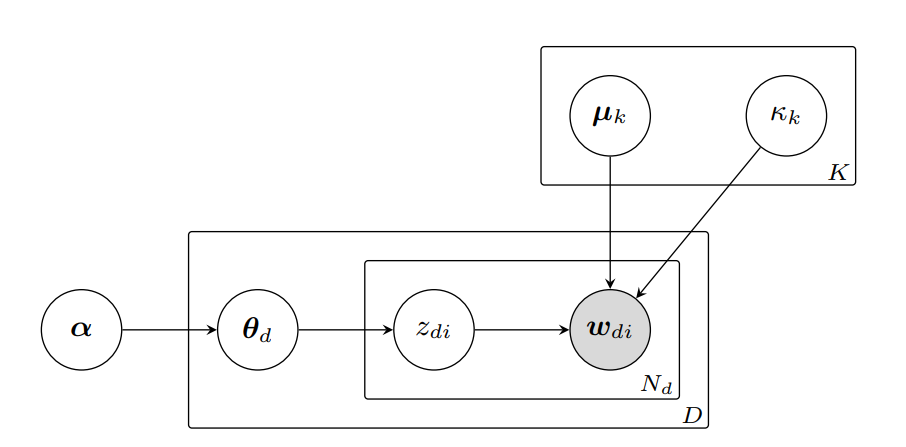

vSLDA
vSDLA (Kobayashi et al., 2026) is a late-interaction probabilistic topic model that models as mixtures of von-Mises distributed embeddings. The model is based on Latent Dirichlet Allocation, except its outcome distribution is a better fit for L2-normalized neural embeddings.

Figure from Kobayashi et al. (2026)
Usage
vSDLA is natively a multi-vector/late-interaction topic model. If you intend to use the model effectively you should make yourself familiar with Turftopic's ragged array API.
The authors originally intend the model to be used on sentence level, but in Turftopic, one can use vSLDA on contextual windows or tokens.
Choose granularity and pooling
from turftopic import vSLDA
documents = [...]
# pooling and window_size are default parameters,
# you don't have to specify that they are None
model = vSLDA(10, window_size=None, pooling=None)
# The doc-topic matrix is a list of token-topic matrixes: (n_windows, n_topics)
# offsets contains the character offsets of each token in (start, end) tuples,
doc_topic_matrix, offsets = model.fit_transform(documents)
model.print_topics()
from turftopic import vSLDA
documents = [...]
model = vSLDA(10, window_size=20, pooling=None)
# The doc-topic matrix is a list of window-topic matrixes shape: (n_windows, n_topics)
# offsets contains the character offsets of each window in (start, end) tuples,
doc_topic_matrix, offsets = model.fit_transform(documents)
model.print_topics()
import numpy as np
from turftopic import vSLDA
documents = [...]
# We will use np.nanmean to pool token-level topic probabilities
# One can also use other pooling techniques that respect the nature of probabilities
# better
model = vSLDA(10, pooling=np.nanmean)
# The doc-topic matrix is a regular matrix, shape: (n_docs, n_topics)
# No offsets are returned when pooling is specify
doc_topic_matrix, offsets = model.fit_transform(documents)
model.print_topics()
Term importance estimation
vSLDA, similar to most other models in Turftopic, estimates term importances post-hoc. Kobayashi et al. (2026) used NPMI for this purpose, which is also the default behaviour in Turftopic. By default, however, Turftopic adds a smoothing term to the probability estimates instead of using frequencies, as very infrequent terms could dominate topics when one uses naive estimates. Additionally, one can use a variety of different term importance estimation methods, some of which are embedding-based.
To read more about the different term importance estimation techniques, read our documentation page on Clustering Topic Models and Topeax.
Choose a term importance estimation method
from turftopic import vSLDA
documents = [...]
model = vSLDA(10, feature_importance="npmi")
doc_topic_matrix, offsets = model.fit_transform(documents)
model.print_topics()
Kardos (2026) introduced a mixed method for estimating term importances in probabilistic embedding-based topic models, which combines NPMI, a term based measure, and a cosine distance based semantic measure. In our experience, this term importance method tends to be most robust and produces most interpretable topics, but more research remains to be done in this area.
from turftopic import vSLDA
documents = [...]
model = vSLDA(10, feature_importance="lexical-semantic")
doc_topic_matrix, offsets = model.fit_transform(documents)
model.print_topics()
from turftopic import vSLDA
documents = [...]
model = vSLDA(10, feature_importance="c-tf-idf")
doc_topic_matrix, offsets = model.fit_transform(documents)
model.print_topics()
from turftopic import vSLDA
documents = [...]
model = vSLDA(10, feature_importance="fighting-words")
doc_topic_matrix, offsets = model.fit_transform(documents)
model.print_topics()
Choice of embedding model
The authors used all-MiniLM-L6-v2 for most of their investigations, which is, incidentally, the default encoder model in Turftopic.
In addition, they they benchmarked MiniLM against two larger embedding models (all-mpnet-base-v2 and bge-base-en-v1.5) and found no improvement.
It has to be noted, that none of the above models were developed for multi-vector tasks.
In Turftopic, vSLDA can be used with any embedding model, including MultiVectorEncoder and SentenceTransformer models.
Choose encoder model
from turftopic import vSLDA
documents = [...]
model = vSLDA(10, encoder="all-MiniLM-L6-v2")
doc_topic_matrix, offsets = model.fit_transform(documents)
model.print_topics()
import torch
from turftopic import vSLDA
documents = [...]
model = vSLDA(
10,
encoder="jinaai/jina-embeddings-v5-text-small",
trf_kwargs=dict(
trust_remote_code=True,
device="cpu",
model_kwargs={"dtype": torch.bfloat16}
),
encode_kwargs=dict(task="clustering")
)
doc_topic_matrix, offsets = model.fit_transform(documents)
model.print_topics()
from turftopic import vSLDA
documents = [...]
model = vSLDA(10, encoder="lightonai/LateOn")
doc_topic_matrix, offsets = model.fit_transform(documents)
model.print_topics()
References
Please cite the original authors and Turftopic, when using vSLDA:
@misc{kobayashi2026vmfsentenceldaspherical,
title={vMF Sentence LDA: A Spherical Topic Model over Sentence Embeddings},
author={Ryotaro Kobayashi and Yuri Murayama and Kiyoshi Izumi},
year={2026},
eprint={2610.05095},
archivePrefix={arXiv},
primaryClass={cs.CL},
url={https://arxiv.org/abs/2610.05095},
}
@article{
Kardos2025,
title = {Turftopic: Topic Modelling with Contextual Representations from Sentence Transformers},
doi = {10.21105/joss.08183},
url = {https://doi.org/10.21105/joss.08183},
year = {2025},
publisher = {The Open Journal},
volume = {10},
number = {111},
pages = {8183},
author = {Kardos, Márton and Enevoldsen, Kenneth C. and Kostkan, Jan and Kristensen-McLachlan, Ross Deans and Rocca, Roberta},
journal = {Journal of Open Source Software}
}
API Reference
turftopic.models.vslda.vslda.vSLDA
Bases: LateModel
von-Mises distributed sentence LDA.
from turftopic import vSLDA
corpus: list[str] = ["some text", "more text", ...]
model = vSLDA(10).fit(corpus)
model.print_topics()
Parameters:
| Name | Type | Description | Default |
|---|---|---|---|
n_components |
int
|
Number of topics. |
required |
encoder |
Union[Encoder, str]
|
Model to encode documents/terms, all-MiniLM-L6-v2 is the default. |
'sentence-transformers/all-MiniLM-L6-v2'
|
vectorizer |
Optional[CountVectorizer]
|
Vectorizer used for term extraction. Can be used to prune or filter the vocabulary. |
None
|
random_state |
Optional[int]
|
Random state to use so that results are exactly reproducible. |
None
|
n_iter |
int
|
Number of iterations to run with the EM algorithm. |
25
|
window_size |
Optional[int]
|
Size of the sliding window to average tokens over. If None, documents will be represented at a token level. |
None
|
step_size |
Optional[int]
|
Step size of the window. If (step_size == None) or (step_size == window_size), then windows are separate. If step_size < window_size, windows will overlap. If step_size > window_size, there will be gaps between the windows. In this case, we throw a warning, as this is probably unintended behaviour. |
None
|
pooling |
Indicates whether and how to pool document-topic matrices.
If None, multi-vector topic proportions are returned in a ragged array.
If Callable, multiple vectors are averaged with the callable in each document.
You could for example take the mean by specifying |
None
|
|
feature_importance |
FeatureImportance
|
Feature importance method to use. |
'npmi'
|
trf_kwargs |
Keyword arguments to apply when loading the Encoder model. |
None
|
|
encode_kwargs |
Keyword arguments to apply encoding documents with the encoder. |
None
|
Source code in turftopic/models/vslda/vslda.py
39 40 41 42 43 44 45 46 47 48 49 50 51 52 53 54 55 56 57 58 59 60 61 62 63 64 65 66 67 68 69 70 71 72 73 74 75 76 77 78 79 80 81 82 83 84 85 86 87 88 89 90 91 92 93 94 95 96 97 98 99 100 101 102 103 104 105 106 107 108 109 110 111 112 113 114 115 116 117 118 119 120 121 122 123 124 125 126 127 128 129 130 131 132 133 134 135 136 137 138 139 140 141 142 143 144 145 146 147 148 149 150 151 152 153 154 155 156 157 158 159 160 161 162 163 164 165 166 167 168 169 170 171 172 173 174 175 176 177 178 179 180 181 182 183 184 185 186 187 188 189 190 191 192 193 194 195 196 197 198 199 200 201 202 203 204 205 206 207 | |